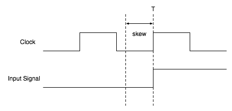
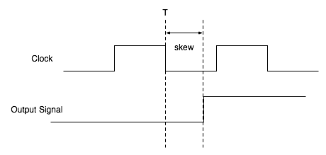

Copyright © 2005 Newisys, Inc. Licensed under the Open Software License version 2.0.
Product and company names mentioned herein may be trademarks of their respective owners.
Last updated 10/19/05
When using the Jove environment, users write an ifgen specification to describe which Verilog signals and tasks will be accessed from Java. This specification is then parsed by a program called jove-ifgen (Jove Interface Generator), which generates the appropriate Java and Verilog files to facilitate such access.
An ifgen specification is comprised of interfaces, ports, binds, HDL tasks, HVL tasks, and testbench declarations. A brief definition of each follows. Each type is described in more detail in the following sections.
Interfaces are the mechanism by which the exact Verilog signals to be used in the testbench are defined. An interface includes a group of signal definitions as well as exactly one clock signal (which may be explicit or implicit).
Each signal has a type associated with it that indicates whether it is an input, an output, or both. The possible types are input, output, inout, or clock. Signals declared as inputs will be sampled by the testbench, but never driven. Signals declared as outputs will be driven by the testbench, but never sampled. Inout signals may be sampled and driven by the testbench. Clock signals are a special type of input signal that affect how other signals in the interface are sampled and driven.
Every non-clock signal has an associated clock edge. This is the edge on which the signal is sampled (inputs and inouts) or driven (outputs and inouts). Signals may be sampled and driven on the positive edge of the clock, the negative edge, or both.
Inputs are sampled relative to the clock signal in their interface1. Every input signal has an input skew. This value is an integer in units of Verilog ticks. When a clock edge occurs at time T, the value is sampled at time T - skew. While an input skew of 0 is allowed, it is not advised as its behavior is often simulator dependent.

Figure 1: Input Skew
Outputs are driven relative to the clock signal in their interface. Every output signal has an output skew. This value is an integer in units of Verilog ticks. When a clock edge occurs at time T, the value is driven at time T + skew.

Figure 2: Output Skew
There are two ways to specify the Verilog signal associated with an interface signal. The first is to specify the fully qualified path of the signal. The second involves defining a default module for the interface and specifying paths relative to that module.
The syntax for declaring a default module is:
default module <module_def>;
where module_def is the fully qualified path of the default module. A default module definition is visible to signals declared after the definition. There may be multiple default module definitions in an interface, but only the most recent is visible.
It is also possible to define default values for clock edges, input skews and output skews of interface signals.
The syntax for declaring default values for input signals is:
default sample(<clkedge>, <skew>);
where clkedge is one of posedge, negedge, or anyedge and skew is an integer less than or equal to zero. A default sample definition is visible to signals declared after the definition. There may be multiple default sample definitions in an interface, but only the most recent is visible.
The syntax for declaring default values for output signals is:
default drive(<clkedge>, <skew>);
where clkedge is one of posedge, negedge, or anyedge and skew is an integer greater than or equal to zero. A default drive definition is visible to signals declared after the definition. There may be multiple default drive definitions in an interface, but only the most recent is visible.
The syntax of a signal declaration is:
<type> [ <width> ] <name> [ <sample_spec> ] [ <drive_spec> ]
( hdl_node | module ) <signal_path>;
where:
sample_spec and/or drive_spec are required if there is no default specification in effect.
It is possible to parameterize interfaces. This is described in Parameterizing Interfaces, Binds, HDL tasks & Testbenches . The full grammar for interface sections is included as part of Appendix B.
Result: The code generated from interface definitions is not used by user code.
A port is a collection of abstract signals. An abstract signal does not define a width, and may not define a direction. These abstract signals are then bound to concrete interface signals via a bind. A port can be thought of as a data type while a bind is an instantiation of that data type.
The grammar for defining a port is shown below.
port ::= "port" <port_name> [ <reverse_port_name> ] "{" port_member ( port_member )* "}"
port_member ::= [ [ "fixed" ] direction ] <member_name> ";"
direction ::= ( "input" | "output" | "inout" )
The direction specified is relative to the testbench. While the direction is optional, it is recommended as it allows for additional compile-time checks on the code using the signal. When direction is omitted, the direction is assumed to be inout. If reverse_port_name is specified, two ports will be created with the second being the "reverse port". A reverse port contains each signal in the regular port, but with its direction reversed. This means signals declared as inputs in the regular port become outputs in the reverse port. Signals declared as inout are left unchanged in the reverse port. Further, signals modified with the fixed attribute will have the same direction in both the forward and reverse ports. Thus, if a port is comprised solely of inout signals or signals which all have the fixed attribute, its contents will be identical to the reverse port.
Reverse ports are generally useful when writing a module that needs to model both the input and output of an interface. Consider a module that can both send data to and receive data from some I/O device. Such a module would need a port describing the interface's signals both from the transmit direction and the receive direction. In this case a reverse port is exactly what is called for.
Result: A class called port_name will be generated containing an InputSignal, OutputSignal, or InOutSignal class member, as appropriate, for each port member. (These signal interfaces are defined in the com.newisys.dv package.)
Binds associate concrete interface signals with abstract port signals. If a port is considered a data type, a bind is an instantiation of that data type. To associate a port signal with an interface signal, use the following syntax:
<port_signal> <intf_name>.<intf_signal>;
where:
It often happens that each concrete signal being bound resides in the same interface. Ifgen allows the user to specify a default interface with the following syntax:
default interface <intf_name>;
where intf_name is the identifier of the default interface. A default interface definition is visible to those declarations that come after the definition. There may be multiple default interface definitions in a bind, but only the most recent is visible. When a default interface definition is in effect, the association of a port signal with an interface signal becomes:
<port_signal> <intf_signal>;
where intf_signal exists in the default interface.
It is also possible to bind a concatenation of interface signals to a port signal. This can be achieved with the following syntax:
<port_signal> { <intf_name_1>.<intf_signal_1> [, <intf_name_2>.<intf_signal_2> ... ] };
Of course, if a default interface definition is in effect, this becomes:
<port_signal> { <intf_signal_1> [, <intf_signal_2> ... ] };
where each interface signal exists in the default interface.
The grammar for a non-parameterized bind is shown below.
bind ::= "bind" <bind_name> "is" <port_type> "{" bind_stmt ( bind_stmt )* "}"
bind_stmt ::= default_intf_def | port_signal_assignment
default_intf_def ::= "default interface" <intf_name> ";"
port_signal_assignment ::= <port_signal> bind_expr ";"
bind_expr ::= intf_signal_ref | bind_concatenation
bind_concatenation ::= "{" intf_signal_ref ( "," intf_signal_ref )* "}"
intf_signal_ref ::= [ <intf_name> "." ]<intf_signal>
It is possible to parameterize binds. For more information see Parameterizing Interfaces, Binds, HDL tasks & Testbenches . The full grammar for binds is included as part of Appendix B.
Result: For non-parameterized binds, a class called bind_name is generated with a public static final member of type port_type named INSTANCE. INSTANCE has each of its members bound to the appropriate interface signal(s).
HDL tasks provide a way for users to execute Verilog tasks from Java code. An HDL task declaration will require the user to supply a name which will be used to reference the task in the Jove environment. There is currently a restriction that this name must be unique in the ifgen specification (and any ifgen specifications it imports). As in Verilog, if width is omitted for any parameter, a width of 1 is used.
The grammar for a nonparameterized HDL task is shown below.
hdl_task ::= "hdl_task" <jove_task_name> task_arguments <verilog_task_path> ";"
task_arguments ::= "(" task_argument ( "," task_argument )* ")
task_argument ::= ( "input" | "output" | "inout" ) [ width ] <task_argument_name>
It is possible to parameterize HDL tasks. For more information see Parameterizing Interfaces, Binds, HDL tasks & Testbenches . The full grammar for hdl tasks is included as part of Appendix B.
Result: A class is generated containing static methods which can be used to call the HDL tasks declared in the ifgen specification. The name of this generated class is based on the name of the package in which the HDL tasks are declared. For instance, if the tasks are declared in the package com.foo.bar, a class named com.foo.bar.BarTasks will generated containing a static method for each HDL task. If no package is specified, a class named Tasks will be generated in the default package containing a static method for each HDL task.
HVL tasks provide a way for users to execute methods in a Jove testbench from Verilog. An HVL task declaration will require the user to supply a name which will be used to reference the task in both the Jove environment and in Verilog. There is a restriction that this task name must be unique in the ifgen specification (and any ifgen specifications it imports). As in Verilog, if width is omitted for any parameter, a width of 1 is used.
The ifgen HVL task grammar is shown below.
hvl_task ::= "hvl_task" <task_name> task_arguments ";"
task_arguments ::= "(" task_argument ( "," task_argument )* ")"
task_argument ::= ( "input" | "output" | "inout" ) [ width ] <task_argument_name>
Result: A Verilog task with the name task_name is generated in the Verilog shell. When this task is called, Jove searches for a registered method with the name "task_"<task_name> (e.g. if task_name is "myTask", the Jove would search for "task_myTask"). By default, Jove searches the hierarchy of the DVApplication being run; however, other tasks can be registered via the com.newisys.dv.JavaTaskManager.registerTask() method.
An enumeration defines a type that can be used by parameterized interfaces, binds, and testbenches. For more information, see Parameterizing Interfaces, Binds, HDL tasks & Testbenches. The grammar for an enumeration is shown below.
enumeration ::= "enum" <enumeration_type> "{" <enumeration_value> ( "," <enumeration_value> )* ";" "}"
Result: A Java enumeration called enumeration_type is generated.
Testbench declarations instruct ifgen on how to generate a Verilog shell. They also specify which HDL tasks and HVL tasks should be included in that shell.
The non-parameterized grammar for a testbench is shown below.
testbench ::= "testbench" <tb_name> "{" ( import_stmt )* "}"
import_stmt ::= "import" ( <qualified_type | pkg_wildcard> ) ";"
The generated shell will include the following:
Result: A Verilog module whose name is tb_name. This module will be written to a file whose name is based on the name of the specification being parsed. If the specification is memctl.if, the shell will be written to memctl_shell.v by default. The name of the file containing the generated shell can be modified as described in Compiling an ifgen Specification.
It is possible to parameterize testbenches. For more information see Parameterizing Interfaces, Binds, HDL tasks & Testbenches . The full grammar for testbenches is included as part of Appendix B.
Ifgen allows the user to specify a package in an ifgen specification. When a package declaration is present, generated Java source files will placed into that package. If no package declaration is present, the default package will be used (as in Java). The package decaration, if present, should be the first (non-comment) statement in the file and has the following grammar:
pkg_stmt ::= "package" <pkg_name> ";"
where pkg_name is a Java-style package name.
In a modular design, it is useful to have multiple ifgen specifications for different levels of abstraction. A port may be defined in com.foo.bar.baz and then bound one way in com.foo.testbench.a and another way in com.foo.testbench.b. Ifgen supports this by allowing the user to import ifgen specifications from other packages. The greammar for such an import is:
import_stmt ::= "import" ( <qualified_type> | <pkg_wildcard> ) ";"
where qualified_type is the fully qualified path to an ifgen type and pkg_wildcard is a package name ending in ".*". In the example above, the ifgen specifications in each testbench would have a statement like one of those show below:
import com.foo.bar.baz; // qualified_type
import com.foo.bar.*; // pkg_wildcard, including all ifgen types in package com.foo.bar
This usage of import in this context is different than that of the testbench declaration. The global import statement imports port types that can be bound in the ifgen specification, while the usage of import in the testbench declaration specifies which signals, HDL tasks, and HVL tasks to include in the generated Verilog shell. Global import statements, if present, must be placed after any package declaration, but before any interface, port, bind, HDL task, HVL task, or testbench declarations.
When an interface is parameterized, it can use the parameter values in its definition. If, for instance, you have to interact with three instances of a module named dut.mod1, dut.mod2, and dut.mod3, you need only define one interface and parameterize it with an integer that will be used to select from the three instances. The result might look like the code below.
interface ModuleIntfTmpl <integer mod_idx>
{
default sample(posedge, -1);
default drive(posedge, 1);
clock clk hdl_node dut.clk;
input [7:0] input1 hdl_node "dut.mod${mod_idx}.signal1";
output output1 hdl_node "dut.mod${mod_idx}.signal2";
inout input1 hdl_node "dut.mod${mod_idx}.signal3";
}
This example reduces the number of interface signals from 10 (3 modules with 3 signals each plus a clock) to only 4. The parameter is used by prefixing it with a dollar sign "$". Optional curly braces can be placed around the parameter's identifier. This is often useful when the parameter is placed in the middle of another identifier (e.g. foo${bar}baz). Also, when parameters are used in signal declarations as shown above, the HDL path must be quoted. Interface parameters may be used in the following contexts:
The parameters of an interface are described in a comma-delimited list of declarations enclosed in angle brackets. Interface parameter variables come in three types: integer, string, and enumeration. A parameterized interface is then declared using the grammar below.
parameterized_interface ::= "interface" <intf_name> [ parameter_list ]"{" interface_body "}"
parameter_list ::= "<" parameter_decl ( "," parameter_decl )* ">"
parameter_decl ::= parameter_type <parameter_name>
parameter_type ::= "integer "| "string" | <enumeration_type>
port ModulePort
{ clk; sig1; sig2; sig3; } bind ModuleBindTmpl<integer module_index> is ModulePort { default interface ModuleIntfTmpl<$module_index>;
clk clk; sig1 input1;
sig2 output1;
sig3 inout1;
}
In this example, the default interface depends on the parameter passed to the bind. Normally, this configuration would require three binds, one for each module instance; however, with parameterization, this has been reduced to only one bind definition. Bind parameters may be used in the following contexts:
The grammar for a parameterized bind is shown below. The parameter_list production is identical to that described in Parameterized Interfaces.
parameterized_bind ::= "bind" <bind_name> [ parameter_list ] "is" <port_type> "{" bind_body "}"
Once you are accessing Verilog modules that are instantiated multiple times with parameterized interfaces and binds, it also makes sense to access Verilog tasks that are defined within those modules with parameterized HDL tasks. To define a parameterized HDL task, you could write code that looks like the following below.
hdl_task HDLTaskParam<integer x, string y>(input[7:0] a, inout b) "dut$x.$y.footask";
The grammar for the parameterized HDL task is shown below.
parameterized_hdl_task ::= "hdl_task"
Parameterized interfaces, binds and HDL tasks are much like templates, waiting to be instantiated. This instantiation occurs in the testbench block, after any testbench import statements. To continue the example above, the testbench might look like the following:
testbench ModuleTB
{
interface ModuleIntf ModuleIntfTmpl<1>;
interface ModuleIntf ModuleIntfTmpl<2>;
interface ModuleIntf ModuleIntfTmpl<3>;
bind ModuleBind ModuleBindTmpl<1>;
bind ModuleBind ModuleBindTmpl<2>;
bind ModuleBind ModuleBindTmpl<3>;
hdl_task MyHDLTask HDLTaskParam<1, "foo">;
hdl_task MyHDLTask HDLTaskParam<2, "foo">;
hdl_task MyHDLTask HDLTaskParam<3, "foo">;
}
This will work perfectly fine, instantiating interfaces and binds for the three instances of the Verilog module. When binds are instantiated like this, they do not contain an INSTANCE member as described in the Binds section. Rather, the generated testbench class, ModuleTB will include a method with the signature:
public ModulePort getModuleBind(int module_index);
This method is used to acquire a reference to the bind instance. If this method is called with an argument of 2, the returned ModulePort will have Signal members named sig1, sig2, and sig3 which are bound to the appropriate signals in the Verilog instance dut.mod2.
If you have more than three modules, instantiating each one can become tedious. The testbench grammar supports a 'for' loop construct to address this. Using the 'for' loop, the above code can be shortened to the following.
testbench ModuleTB
{
for integer i ([1..3])
{
interface ModuleIntf ModuleIntfTmpl<$i>;
bind ModuleBind ModuleBindTmpl<$i>;
hdl_task MyHDLTask HDLTaskParam<$i, "foo">;
}
}
Testbench 'for' loops operate over a set of values. Sets are declared as comma-delimited values and ranges, enclosed in square brackets. The grammar for the 'for' loop is shown below.
for_loop ::= "for" parameter_type <identifier> "(" for_loop_set ")" "{" for_body "}"
parameter_type ::= "integer" | "string" | <enumeration_type>
for_loop_set ::= parameter_reference | for_loop_set_literal
for_loop_set_literal ::= "[" set_member ( "," set_member )* "]"
set_member ::= range | value
range ::= value ".." value
value ::= integer_literal | string_literal | enumeration_literal | parameter_reference
Integer literals may be specified as decimal or hexadecimal, with hexadecimal values being prefixed by "0x". String literals must be quoted. Enumeration literals need not be qualified. Parameter references are valid when the testbench itself is parameterized (see below). If this is the case, the parameter name is prefixed with a dollar sign "$", as with interfaces and binds. The variable of a 'for' loop may be used in the following contexts:
Finally, testbenches themselves may be paramterized. Testbench parameter types are the same as interface and bind parameter types with the addition of sets. Thus, if a ModuleTB declared above needed to take a dynamic set of module instances, the code below might be used. For instructions on how to pass parameters to testbenches see Compiling an ifgen Specification.
testbench ModuleTB<set of integer module_set>
{
for integer i ($module_set)
{
interface ModuleIntf ModuleIntfTmpl<$i>;
bind ModuleBind ModuleBindTmpl<$i>;
}
}
The grammar for a parameterized testbench is shown below.
paramterized_testbench ::= "testbench" <tb_name> [ parameter_list ] "{" tb_body "}"
parameter_list ::= "<" parameter_decl ( "," parameter_decl )* ">"
parameter_decl ::= parameter_type <parameter_name>
parameter_type ::= primary_type | set_type
set_type ::= "set" "of" primary_type
primary_type ::= "integer" | "string" | <enumeration_type>
Ifgen supports both C- and C++-style comments anywhere in the specification.
Ifgen provides a main() method in the class com.newisys.dv.ifgen.IfgenMain. Ifgen relies on the following Jove packages (their JARs or bin directories should be in the Java classpath):
The usage of IfgenMain is:
IfgenMain [-help] [-srcroot <path>] [-tstamp <path>] [-filelist <path>] [-forcedefaultclock] [-file <path>...] [-dir <path>...] [-genshells] [-shell <testbench> <params> [shellname]]
| Argument | Description |
|---|---|
| -help | Prints ifgen usage to standard out. |
| -srcroot <path> | Specifies the root directory where generated files will be placed. |
| -tstamp <path> | Specifies a timestamp file which is used to avoid recompiling an ifgen specification if it hasn't changed. |
| -filelist <path> | Specifies a file containing generated files which is used to avoid recompiling an ifgen specification if it hasn't changed. |
| -forcedefaultclock | If present, directs ifgen to use a default clock for interfaces that do not explicitly define a clock. |
| -file <path> | The path to an ifgen specification to parse. |
| -dir <path> | Directory to scan for ifgen specifications (all files ending matching *.if are considered ifgen specifications). |
| -genshells | If present, directs ifgen to generate verilog shells for any non-parameterized testbench section found. |
| -shell <testbench> <params> [shellname] | If present, directs ifgen to generate the specified shell as described below. |
After ifgen completes successfully, generated files can be found in the directory specified by -srcroot.
At least one -file or -dir argument must be given. Multiple -file and -dir arguments may be given, in which case they are additive.
When -forcedefaultclock is used, all interfaces without an explicitly defined clock will use the signal returned by com.newisys.dv.DV.simulation.getDefaultClockSignal() as their clock signal. If an interface does not explicitly define a clock signal, and -forcedefaultclock is not used, ifgen will exit with an error.
The -shell argument causes ifgen to generate a shell for a parameterized testbench as specified. testbench is the fully qualified name of the testbench section describing the shell. params is a string of the form "param1=value1 [, param2=value2 ...]" enclosed in angle brackets. The optional shellname argument allows the users to specify the name of the generated shell file. It is an error if shellname specifies a directory path. Multiple -shell arguments are allowed and a shell will be created for each. The -shell and -genshells arguments may be used together.
Parameter values can be integers, strings, enumeration values, or sets of those types. Integer values should be specified in decimal. String values need not be quoted unless they contain leading or trailing whitespace. Enumeration values do not need to be qualified. Sets are specified by enclosing the set values in square brackets. The set values themselves are separated by spaces. In sets of strings, the strings must be quoted. Sets of other types are not quoted. (e.g. ["string 1" "second string"] or [1 4 60 7]). Given all of this, a -shell argument might look like:
-shell com.newisys.tutorial.ParameterizedTestbench "<dut_set=[0 2 4], dut_prefix=mydut>" tutorial_shell.v
This would generate a shell as defined by ParameterizedTestbench, passing a set of integers consisting of 0, 2, and 4 as the dut_set parameter, and mydut as the dut_prefix parameter. The generated shell would be written to a file named tutorial_shell.v.
An ifgen ant task is supplied by the class com.newisys.dv.ifgen.ant.IfgenTask. To use this task, place the following import into your Ant build file (changing the path to jove-defs.xml as appropriate):
<import file="../jove-defs.xml" />
Any target that invokes the ifgen task should add the ifgen-taskdef target to its dependencies. The ifgen task takes a number of parameters which are detailed below. For a detailed description of each parameter, see Compiling an ifgen specification.
Parameters
| Attribute | Description | Required |
|---|---|---|
| srcroot | The directory in which to write generated files. | Yes |
| tstamp | A file to contain timestamp information. | No |
| filelist | A file to contain generated file information. | No |
| forcedefaultclock | A boolean value that specifies whether or not a default clock will be used in interfaces which do not explcitly declare a clock signal. | No |
| genshells | A boolean value that specifies whether or not Verilog shells for non-parameterized testbenches will be generated. | No |
Parameters specified as nested elements
fileset
A fileset describing the ifgen specifications that should be compiled.
shell
A shell configuration for which ifgen should generate a Verilog shell. The shell parameter is the Ant equivalent of the command line -shell argument. Shell parameters are required to generate shells for parameterized testbenches. The shell type takes parameters as described below.
shell Parameters
| Attribute | Description | Required |
|---|---|---|
| testbench | The qualified name of the testbench block that describes the shell to be generated. | Yes |
| shellname | The name to use for the generated shell file. This should simply be a filename, not a directory path. | No |
shell Parameters specified as nested elements
arg
Zero or more arg parameters define the testbench parameters that will be used to generate the Verilog shell. The arg type takes parameter as described below.
arg Parameters
| Attribute | Description | Required |
|---|---|---|
| name | The name of the testbench parameter. | Yes |
| value | The value of the testbench parameter. For a description of how to specify sets, see Compiling an ifgen specification. | Yes |
The following is a list of keywords used in the Jove grammar. If there is a need to use one of these keywords as an identifier or as part of a signal path, simply place quotes around the identifier or signal path.
| anyedge | bind | bit | clock | default | depth |
| drive | enum | for | hdl_node | hdl_task | hvl_task |
| import | inout | input | integer | interface | is |
| module | negedge | of | output | package | port |
| posedge | sample | set | string | testbench |
Below is the full ifgen grammar. Comments are allowed as described above, but are not shown in the grammar. Names consisting of all capital letters indicate lexer tokens, while names in all lowercase represent grammar productions.
ifgen_spec ::= [ pkg_decl ] ( import_decl )* ( intf | port | bind | enum | hdl_task | hvl_task | testbench )*
pkg_decl ::= "package" qname ";"
import_decl ::= "import" ( qname | wildcard ) ";"
intf ::= "interface" identifier [ parameter_list ] "{" ( intf_member )+ "}"
parameter_list ::= "<" parameter_decl ( "," parameter_decl )* ">"
parameter_decl ::= primary_type identifier
primary_type ::= "integer" | "string" | qname
intf_member ::= ( intf_default_def | clock_def | input_def | output_def | inout_def ) ";"
intf_default_def ::= "default" ( sample_def | drive_def | module_def )
sample_def ::= "sample" "(" edge "," integer ")"
drive_def ::= "drive" "(" edge "," integer ")"
edge ::= "posedge" | "negedge" | "anyedge"
module_def ::= "module" bare_module_def
bare_module_def ::= (qname | var_ref )
clock_def ::= "clock" identifier [ module_def | hdl_node_def ]
input_def ::= "input" [ width ] identifier [ sample_def ] [ depth_def ] [ module_def | hdl_node_def ]
output_def ::= "output" [ width ] identifier [ drive_def ] [ module_def | hdl_node_def ]
inout_def ::= "inout" [ width ] identifier [ sample_def ] [ drive_def ] [ depth_def ] [ module_def | hdl_node_def ]
depth_def ::= "depth" integer
hdl_node_def ::= "hdl_node" signal_ref
signal_ref ::= signal_slice | signal_concat
signal_slice ::= ( qname | var_ref ) [ "[" integer [ ":" integer ] "]" ]
signal_concat ::= "{" signal_slice ( "," signal_slice )* "}"
port ::= "port" identifier [ identifier ] "{" ( [ [ "fixed" ] direction ] identifier ";" )+ "}"
direction ::= "input" | "output" | "inout"
bind ::= "bind" identifier [ parameter_list ] "is" qname "{" ( bind_member )+ "}"
bind_member ::= ( bind_default_def | bind_signal_def ) ";"
bind_default_def ::= "default" "interface" qname [ "<" parameter_arg ( "," parameter_arg )* ">" ]
bind_signal_def ::= identifier signal_ref
enum ::= "enum" identifier "{" identifier ( "," identifer )* ";" "}"
hdl_task ::= "hdl_task" identifier [parameter_list] task_arguments bare_module_def ";"
task_arguments ::= "(" task_argument ( "," task_argument )* ")
task_argument ::= ( "input" | "output" | "inout" ) [ width ] identifier
width ::= "[" integer ":" "0" "]"
hvl_task ::= "hvl_task" identifier task_arguments ";"
testbench ::= "testbench" identifier [ tb_parameter_list ] "{" ( import_decl )* ( tb_member )* "}"
tb_parameter_list ::= "<" tb_parameter_decl ( "," tb_parameter_decl )* ">"
tb_parameter_decl ::= tb_parameter_type identifier
tb_parameter_type ::= primary_type | set_type
set_type ::= "set" "of" primary_type
tb_member ::= ( intf_instantiation | bind_instantiation | for_loop )
intf_instantiation ::= "interface" identifier qname "<" parameter_arg ( "," parameter_arg )* ">" ";"
parameter_arg ::= integer | string_literal | qname
bind_instantiation ::= "bind" identifier qname "<" parameter_arg ( "," parameter_arg )* ">" ";"
for_loop ::= "for" primary_type identifier "(" for_loop_set ")" "{" ( for_member )* "}"
for_loop_set ::= parameter_reference | for_loop_set_literal
for_loop_set_literal ::= "[" for_set_member ( "," for_set_member )* "]"
for_set_member ::= range | value
for_member ::= intf_instantiation | bind_instantiation
range ::= value ".." value
value ::= integer | string_literal | qname | var_ref
qname ::= identifier ( "." identifier )*
wildcard ::= qname ".*"
identifier ::= ID | QUOTED_ID
qname ::= QUOTED_ID | QUOTED_NAME | ID ( "." ID )*
wildcard ::= qname [ "." "*" ] | QUOTED_QNAME_DOT_STAR
string_literal ::= STRING_LITERAL
integer ::= DECIMAL_LITERAL | HEX_LITERAL | OCTAL_LITERAL
var_ref ::= VAR | QUOTED_VAR_QNAME
ID ::= LETTER ( LETTER | DIGIT )*
LETTER ::= [ "a"-"z", "A"-"Z", "_" ]
DIGIT ::= ["0"-"9", "_" ]
QUOTED_ID ::= "\"" ID "\""
QUOTED_QNAME ::= "\"" ID ( "." ID )* "\""
QUOTED_QNAME_DOT_STAR ::= "\"" ID ( "." ID )* ".*\""
DECIMAL_LITERAL ::= ( "-" )? [ "1"-"9" ] ([ "0"-"9" ])*
HEX_LITERAL ::= ( "-" )? "0" [ "x", "X" ] ([ "0"-"9", "a"-"f", "A"-"F" ])+
OCTAL_LITERAL ::= ( "-" )? "0" ([ "0"-"7" ])*
STRING_LITERAL ::= "\"" ( (~[ "\"", "\\", "\n", "\r" ]) | ( "\\" [ "b", "t", "n", "f", "r", "\\", "'", "\"" ]) )* "\""
VAR ::= ( "$" ID ) | ( "${" ID "}" )
NUMBER ::= DIGIT ( DIGIT )*
VAR_ID_MIX ::= ( <ID> )? ( <VAR> ( <NUMBER> | <VAR> | <ID> )* )+
QUOTED_VAR_QNAME ::= "\"" ( ID ( "." ID )* "." )? ( ID_VAR_MIX ( "." ( ID | ID_VAR_MIX ) )* )+ "\""